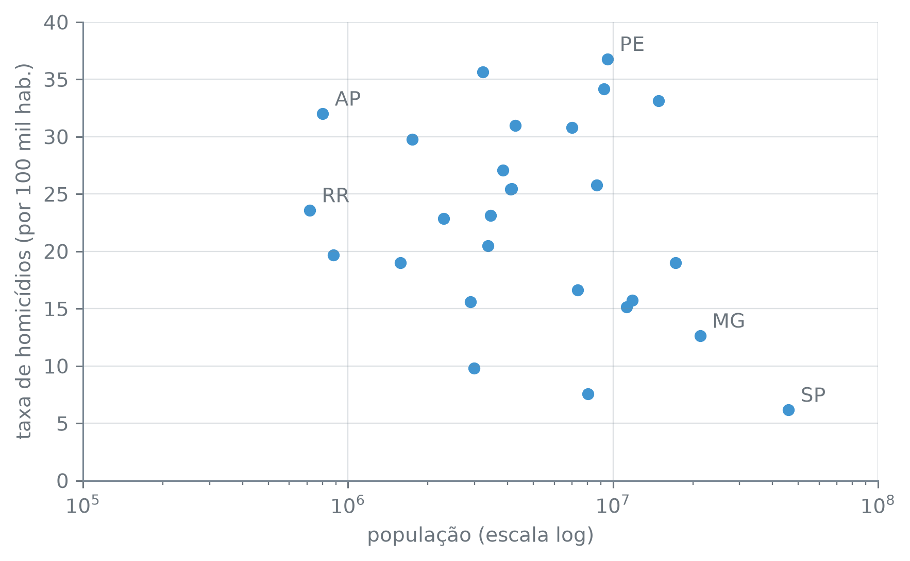

estados = pd.read_csv("dados/estados.csv")
estados.shape(27, 4)A seção anterior tratou estados como quatro colunas soltas, cada uma com o seu tipo — mas nenhuma coluna existe sozinha: são as linhas que as amarram, cada uma descrevendo a mesma unidade federativa em Estado, Populacao, Taxa.Homicidios e Sigla. É essa junção — colunas compartilhando linhas — que faz de estados uma tabela, e não uma pilha de quatro listas independentes.
shape mede essa junção direto:
Linhas são registros — cada uma, uma unidade federativa —, e colunas são variáveis — cada uma, uma medida ou um rótulo sobre ela. O par (27, 4) só quer dizer alguma coisa porque se sabe o que cada eixo representa: 27 estados, 4 variáveis por estado. Se as duas dimensões trocassem de lugar — 4 linhas, 27 colunas —, a tabela teria os mesmos números escritos, só que descrevendo outro problema: cada linha seria uma variável, e cada coluna, um estado.
head() mostra as primeiras linhas dessa junção:
| Estado | Populacao | Taxa.Homicidios | Sigla | |
|---|---|---|---|---|
| 0 | Rondônia | 1746227 | 29.78 | RO |
| 1 | Acre | 880631 | 19.65 | AC |
| 2 | Amazonas | 4281209 | 30.97 | AM |
| 3 | Roraima | 716793 | 23.58 | RR |
| 4 | Pará | 8664306 | 25.77 | PA |
info() acrescenta o que head() não mostra: quantos valores não nulos há em cada coluna, e quanta memória a tabela ocupa.
<class 'pandas.core.frame.DataFrame'>
RangeIndex: 27 entries, 0 to 26
Data columns (total 4 columns):
# Column Non-Null Count Dtype
--- ------ -------------- -----
0 Estado 27 non-null object
1 Populacao 27 non-null int64
2 Taxa.Homicidios 27 non-null float64
3 Sigla 27 non-null object
dtypes: float64(1), int64(1), object(2)
memory usage: 996.0+ bytesAs quatro colunas têm 27 valores não nulos cada — nenhum furo nesta tabela —, e o total ocupa 996,0+ bytes; o sinal de mais avisa que essa é uma estimativa rasa, que conta menos que o real para as colunas de texto, como a seção anterior já tinha medido de outro jeito.
Linhas são registros, colunas são variáveis. É essa convenção — não uma lei da natureza — que faz (27, 4) significar “27 estados, 4 variáveis” em vez de “27 variáveis, 4 estados”. Trocar os eixos preservaria os números e destruiria o significado.
Toda tabela tem um índice, ainda que ele passe despercebido. Por padrão, o pandas numera as linhas pela posição em que chegaram:
0, 1, 2, e assim por diante — a mesma ordem do arquivo, sem relação com o conteúdo de nenhuma coluna. set_index troca esse índice posicional por um rótulo tirado dos próprios dados:
Estado São Paulo
Populacao 45973194
Taxa.Homicidios 6.16
Name: SP, dtype: objectCom Sigla como índice, .loc["SP"] deixa de ser uma posição para virar uma busca por rótulo — ela devolve a linha de São Paulo, com população de 45.973.194 e taxa de 6,16 homicídios por 100 mil habitantes, sem que se precise saber em que posição do arquivo aquela linha estava. É uma busca que a posição sozinha nunca permitiria com sentido.
.loc contra .ilocTrocar o índice não apaga a posição — só deixa de ser o caminho padrão para chegar numa linha. .iloc continua contando por posição, .loc passa a contar por rótulo, e os dois convivem na mesma tabela:
.iloc[0] continua trazendo Rondônia — a primeira linha do arquivo original —, porque .iloc ignora o índice e enxerga só a posição. .loc["SP"], feito na mesma tabela, nunca devolveria essa linha: São Paulo não está na posição 0, está no rótulo "SP".
Na mesma tabela por_sigla, .iloc[0] devolve Rondônia e .loc["SP"] devolve São Paulo — duas linhas diferentes, ambas corretas, cada uma respondendo a uma pergunta diferente: “qual é a primeira linha?” contra “qual linha tem o rótulo SP?”.
Series e DataFrameSelecionar uma coluna também tem duas respostas possíveis, e a sintaxe decide qual delas volta. Colchete simples devolve a coluna nua; colchete duplo devolve uma tabela de uma coluna só:
<class 'pandas.core.series.Series'>
<class 'pandas.core.frame.DataFrame'>estados["Populacao"] devolve uma Series — um vetor de 27 valores com índice, formato (27,). estados[["Populacao"]], com colchete duplo, devolve um DataFrame — a mesma informação embrulhada numa tabela de uma coluna, formato (27, 1). A diferença aparece toda vez que um método espera uma tabela e recebe um vetor, ou o contrário, e volta a importar mais adiante, na seção 6.6.
Olhando coluna a coluna, estados não deixa ver se população e violência caminham juntas — a pergunta é se as duas se movem junto, o que uma correlação (um número entre −1 e 1 que resume o quanto duas variáveis crescem juntas, com 0 indicando nenhuma relação linear entre elas) mede diretamente, mas primeiro pede um gráfico, não mais uma linha de código sobre uma coluna só:
fig, ax = plt.subplots()
ax.scatter(estados["Populacao"], estados["Taxa.Homicidios"])
ax.set_xscale("log")
destaques = ["RR", "AP", "PE", "MG", "SP"]
for _, linha in estados[estados["Sigla"].isin(destaques)].iterrows():
ax.annotate(
linha["Sigla"],
(linha["Populacao"], linha["Taxa.Homicidios"]),
xytext=(6, 4),
textcoords="offset points",
)
ax.set_xlabel("população (escala log)")
ax.set_ylabel("taxa de homicídios (por 100 mil hab.)")
plt.tight_layout()
plt.show()
A nuvem de pontos não desenha uma diagonal clara: em quase todo nível de população há um estado com taxa alta e outro com taxa baixa perto dele. Os dois estados de menor população ilustram isso de perto:
| Sigla | Populacao | Taxa.Homicidios | |
|---|---|---|---|
| 3 | RR | 716793 | 23.58 |
| 5 | AP | 802837 | 32.01 |
| Sigla | Populacao | Taxa.Homicidios | |
|---|---|---|---|
| 19 | SP | 45973194 | 6.16 |
| 16 | MG | 21322691 | 12.63 |
Roraima e Amapá têm populações de 716.793 e 802.837 — diferença de menos de 100 mil habitantes —, e taxas de 23,58 e 32,01: quase vizinhos num eixo, distantes no outro. No outro extremo, São Paulo (45.973.194 habitantes) e Minas Gerais (21.322.691), as duas maiores populações da tabela, têm taxas de 6,16 e 12,63 — ambas entre as mais baixas. E a maior taxa de todas não é de um estado pequeno nem do maior:
| Sigla | Populacao | Taxa.Homicidios | |
|---|---|---|---|
| 12 | PE | 9539029 | 36.78 |
Pernambuco tem a maior taxa da tabela, 36,78 — e não é um estado pequeno:
mediana de Populacao: 4145040.0
posição de PE por população (1 = maior): 7 de 27Pernambuco é o sétimo mais populoso das 27 unidades, com população acima do dobro da mediana. A correlação entre as duas colunas dá um primeiro número para o que o olho já viu:
-0,41 é uma correlação fraca. Tirando os dois estados que a puxam no topo da população:
np.float64(-0.02)ela cai de -0,41 para -0,02 — praticamente zero. São Paulo e Minas Gerais sozinhos respondem pela tendência inteira; tirados os dois, população e taxa não guardam relação nenhuma entre si no resto da distribuição. Separar os estados por região é um próximo passo possível para procurar o que de fato explica a variação — população isolada não é essa resposta.
A tabela usada até aqui não tem um valor faltante sequer. A próxima seção troca esse arquivo limpo por um que chega direto de uma fonte real, com furos e tipos que o pandas não resolve sozinho.